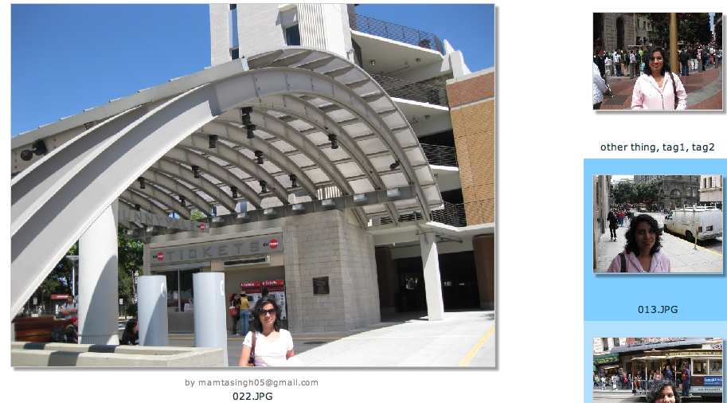
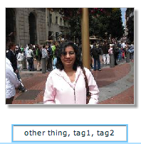
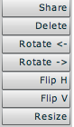
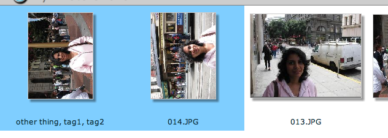
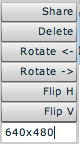
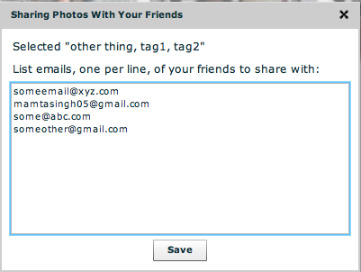
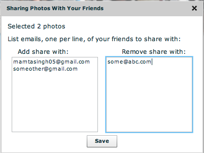
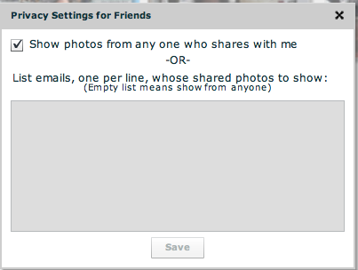
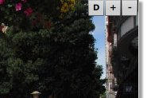

This is a photo sharing, viewing and editing application written using Flex front end and Java backend for Google App engine. Visit http://my-photo-share.appspot.com to see the online version of the software.
This document describes the features and how to use the software: Getting started, uploading images, tile and list view, assigning tags, rotate and flip, resize, delete, sharing and privacy, zoom in and zoom out, download, known issues, and more ideas for future work.
The previous section described how to upload images by clicking on the upload button and selecting one or more images. Only the JPEG and PNG images are supported. The images are stored in the Google App Engine data store. The server first creates a thumb-nail 256x256 of the uploaded image, then stores both the original data and the thumb nail. The thumb-nail images are typically displayed in the tile view whereas the full image is displayed in the list view for efficiency.
I have tested with uploading simple JPEG photographs with simple file names to the system and it works well. Once you upload one or more files, it puts the blank box in the view with name of the file and a "Loading" text. Once the file is uploaded and the thumb-nails are downloaded, it replaces the blank box with the actual image thumb-nail and you can see the uploaded images.
Only files of size less than 1 MB are allows to be uploaded. I have implemented the blobstore based server code also which allowed storing larger than 1 MB files, and it worked well with the local testing. However Google Apps Engine requires billing to be enabled if I want to use blobstore service on the actual site. So I disabled upload of more than 1 MB file sizes, by checking in the client itself, and prompting the user if the file sizes are more than 1 MB.
The main page displays all the images that are viewable by you including your uploaded images. The view automatically adjusts when you resize the browser by adjusting number of columns and rows in the tile view.
The software supports two viewing modes. The default is the Tile view where all your uploaded images are laid out in a tile. When you click on the "List" link item on the top menu, it changes the view to the "list" view where you have the list of all the thumb-nail on the right and the currently selected image item with bigger size on left. In list view, the menu item changes to "Tile" and clicking on it takes you back to tile view. You can also double-click an image to change to list view with that image as selected image. You can double-click the selected image on the left in the list view to go back to tile view. An example list view is shown below.
Some operations are supported only in tile view and some only in list view. For example, multiple selection is supported only in tile view. The zoom-in, zoom-out and photo-download are supported only in list view. I will describe these features later.
In the tile view you can drag one or more images to other position to re-order. In list view you can use the up and down arrow keys to navigate through your selection. You can also use the mouse click to select an image from the right hand side list.
In the list view the selected image is shown in larger size on the left. The actual image data is downloaded for this instead of using the thumb-nail data, whereas all the tile view images and the right-hand side list images are shown in thumb view. You may see the quality of the larger size image as poor for some time until the larger size image is downloaded and replaces the thumb-nail image on the left. On fast connection this may appear as a flicker of the left image in list view as you navigate through the image list. The flicker will go away if you are navigating the second time because the larger size image is already downloaded. On slow connection you can see the poor quality image for some time before getting replaced by the higher quality image.
The caption below the image is editable by the owner to any value. For example, you can store comma separated tags. The caption or tags are stored in the google app engine data store associated with this image. The following shows that the caption changes into a editable text box which allows you to edit the text and press enter to save the updated text. If you reload the page the new text will be visible. Note that the caption of the image not owned by you will not be editable.
You can perform several operations on your images by selecting one or more images. In tile view you can select multiple images using the standard key combination (e.g., Command-key + mouse click to add or remove selection on Mac OS). The selected image is displayed with blue background to indicate selection. In list view you can have only one selected image.
If you select one or more images, a secondary menu appears on the bottom left corner of your page. This secondary menu allows you to do several operations such as rotate, flip or resize the selected images. The following shows the secondary menu with options to Share, Delete, Rotate, Flip and Resize the selected images.
You can click on the rotate and flip buttons to rotate or flip the selected images accordingly. Currently it allows rotate-left (or rotate counter-clock) and rotate-right (or rotate clock) by 90 degrees. The "flip H" means flip horizontal and "flip V" is flip vertical. The following shows that some selected images are rotated counter-clock wise.
The image operations actually happen on the server using the Google Apps Engines image service. The client initiates the request, and after success, it downloads the thumb view again to show the modified image. Hence you may see some delay between clicking on the button and actual image rotation.
The image modification can be done only if the image is owned by you, i.e., your account uploaded the image, and cannot be done if the image is shared to you by some other account.
When you mouse over an image it shows the current dimensions (size) of the image in WxH in the bottom-right corner over the image using white text. For example if the original image you uploaded was 1024x768 pixels, it will show "1024x768". Note that it is "x" and not "*".
When you click on the "Resize" button in the secondary menu, it changes to an editable text box where you can enter another size, e.g., 640x480 and press enter to save. Note that the format of size is with "x", and not with "*". The following shows the text box with new size typed by the user before pressing "enter" key. The error checking if any is done on the server side.
After you re-size, you can see the new size on the image on mouse-over. The re-size is done on the server side using Google Apps Engine image service. Since the display always shows the thumb-nails of 256x256 in tile view, you won't see any noticeable difference in the picture quality. If you select multiple images before clicking on re-size, you can re-size multiple images in the same request.
The secondary menu has a "Delete" button which allows you to delete the selected images. You can only delete the images owned by you, and not the ones shared to you. Selecting multiple images before clicking the delete button allows you to delete multiple images in the same request. In the list view clicking the delete button deletes the current displayed image on the left.
The image deletion is permanent, and cannot be recovered once deleted on the server.
The secondary menu has a "Share" button which allows you to share one or more images with other accounts (or email addresses). The top-menu has a "Privacy" link which allows you to filter the user accounts (or email addresses) whose shared images you want to view.
When you select one image, and click on the "Share" button on the secondary menu, the dialog box appears which lists the current emails addresses to whom you have shared this image with. You can edit this list, by adding or removing email addresses, and click on the save button to save the new sharing information for that selected file. The save button is enabled only after you make some change. The following shows the dialog box.
You need to click on the close button on top-right corner to close the dialog box after saving. Any success or failure message is displayed in the dialog box.
When you select more than one image, and click on the "Share" button, a different dialog box appears as shown below. This allows you to add email addresses with which you want to share or unshare the selected images. Whatever email addresses you list in the "Add share with" section will be added to the share information for all the selected files. Whatever email addresses you list in the "Remove share with" section will be removed from the share information for all the selected files. For adding, if an email is already in the share information of a file, it is ignored. Similarly, for deleting if an email is not in the share information of a file, it is ignored.
The dialog box is different for the multiple-selection because for multiple files the shared email addresses will be different. So it is not possible to display a single list of email addresses and allow both add and remove from the share information for all the files. For a single file, it is possible to first get the existing share information and have the user edit the list.
All the shared images have a label indicating the email address who owns the image. This may be different from the email addresses who shared the image with you. For example if user A uploaded the image, and shared with user B, then user B shared it with you, then you will see user A's email address below that image in your view.
The sharing information is shored on the server side using Google data store. There is no automatic email sent to the email addresses you provide though. Your images view by default displays all the images that are owned (or uploaded) by you, as well as all the images that are shared by others to your email address. For example, the screen shot shown in this document shows one file that is shared by another user to this user (test@example.com).
You can restrict whose images you want to view using the "Privacy" link on the top menu. When you click on the "Privacy" link it opens a dialog box as follows.
The default is to show photos from anyone who shares with you indicated by the check box. If you unselect this check box, you can edit the list of email addresses whose shared photos you want to view. After any change the save button is enabled, and you can click on the save button to save your changes.
An empty list of email addresses is treated as show from anyone. If you do not want to show any one else's images, enter some invalid email address there. This privacy option is used to avoid seeing unwanted images in your view. The data is stored on the server side using Google data store.
When you save the privacy settings, it re-loads your images view and changes to the default tile view. The new images view contains the filter you applied. The dialog box automatically closes when you click on save.
The list view supports zoom-in and zoom-out of the selected larger image view. This is different from re-size option since the server side image data is not modified. The left side image on the list view has some buttons on the top-right corner of the image as shown below. These buttons appear only if you mouse over the larger image.
The + and - buttons allow you to zoom in and zoom out, respectively. The D button is to download this image file.
You can zoom in to bring the view to show the image in larger. Since the overall display area is fixed, but the image view is bigger when you zoom in, you can drag the image view to see a different part of the image in the display area. The image is scaled by 20% if larger than default view and by 10% if smaller than default view. This makes it zoom in faster if you want to view some small part of the image, and makes it zoom out in reasonable steps instead of quickly when reducing the view size.